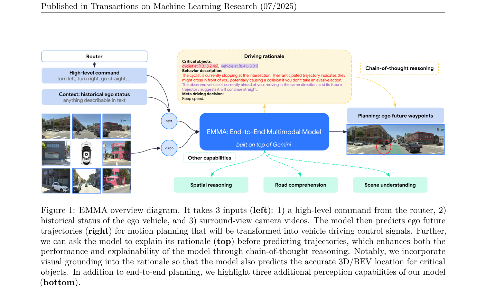
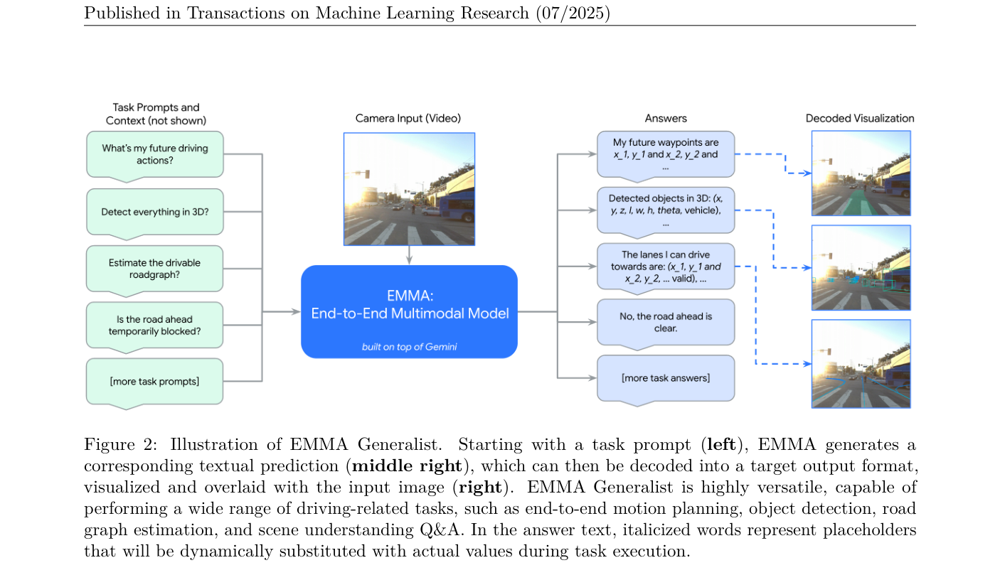
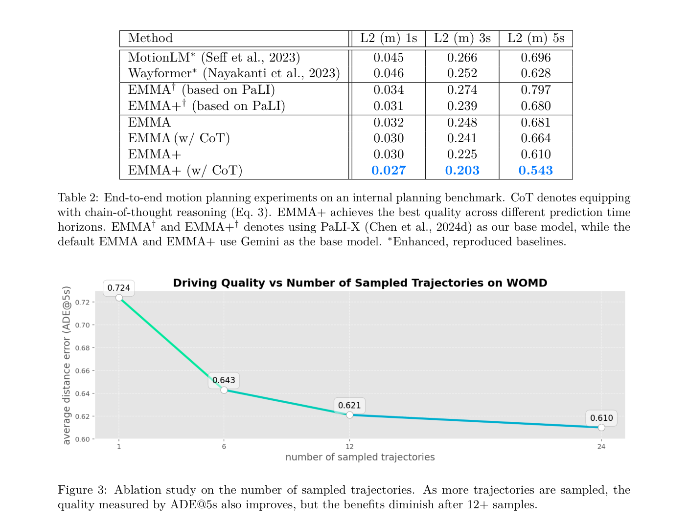

EMMA: End-to-End Multimodal Model for Autonomous Driving
EMMA 基于多模态大语言模型，把导航、ego 状态、轨迹、3D 位置、检测和道路图输出都文本化，在同一语言空间中统一规划、感知和道路理解任务。
EMMA、Gemini、MLLM generalist、textual trajectory、camera-only planning、CoT rationale、nuScenes、Waymo Open Motion Dataset
MLLM generalist / end-to-end planning
否，论文公开但模型/训练数据主要依赖 Gemini 与内部数据
高：适合研究 MLLM generalist 在自动驾驶中的任务统一
计划公网链接：https://ixgnozeix.github.io/paper-reports/report/emma/
1. 论文速览
EMMA 的核心不是再训练一个专用 planner，而是把自动驾驶多任务统一成多模态 prompt-to-text 生成：输入为高层命令、ego 历史状态和环视相机视频，输出可以是未来 ego 轨迹、对象 3D 位置、道路图元素或带 grounding 的决策 rationale。论文报告 EMMA 在 nuScenes motion planning 达到 SOTA，并在 WOMD、WOD camera-primary 3D 检测和 road graph 任务上有竞争力；co-training 规划、检测和道路图任务可互相增益。作者也明确指出局限：只能处理少量图像帧，不使用 LiDAR/radar，计算成本高，真实车部署面临推理延迟。
2. 研究问题与动机
模块化自动驾驶在 perception、prediction、planning 之间传递结构化中间结果，容易产生级联误差和信息瓶颈。端到端 planner 又往往缺少通用世界知识，难以解释复杂场景。EMMA 假设 MLLM 预训练得到的世界知识和语言推理能力可以成为自动驾驶 generalist 的底座；为了让模型统一处理数值轨迹和空间对象，作者把非传感器输入和输出转成自然语言 token，而不是增加多个独立任务头。
4. 方法详解
EMMA 采用多模态大模型作为骨干，将图像帧编码为视觉上下文，把导航命令和 ego 状态写入文本 prompt。规划时，模型生成候选未来 waypoint 序列，并可同时生成 CoT rationale 与 critical object grounding；generalist 设置中，task prompt 决定输出格式，例如 planner trajectory、3D object、road graph element。训练目标是自回归文本预测，输出再由解析器转回轨迹或结构化对象。多任务 co-training 让视觉表征共享规划、检测、道路拓扑约束。推理时可采样多条轨迹，论文 Fig.3 显示候选数量增加能改善 ADE@5s，但超过约 12 条收益递减。
5. 实验与结果
实验覆盖内部规划 benchmark、nuScenes、WOMD 和 WOD。论文 Table 2 中 MotionLM* 在 5s L2 为 0.696、Wayformer* 为 0.628；EMMA+ w/ CoT 被报告在 5s horizon 相对之前 SOTA 有 13.5% 提升。关键消融包括基础 MLLM、是否使用 CoT、是否使用大规模内部数据、采样轨迹数量和多任务 co-training。定性图展示模型能把 cyclist/vehicle 等 critical objects 写进 rationale 并输出未来 waypoint。证据缺口是内部数据和 Gemini 权重不可完全复现，开源社区很难确认同等规模下的训练收益。
6. 复现要点
最小可行复现应退化为 open-source MLLM 版本：用 PaLI/LLaVA/Qwen-VL 类模型，构造 camera + ego state prompt，将轨迹离散/文本化，训练生成未来 waypoints；再增加 object/road graph prompt 做多任务 co-training。需要 nuScenes/WOMD/WOD 数据、图像帧抽取、轨迹字符串解析和候选轨迹采样器。硬件门槛较高，瓶颈是长上下文视频帧和 MLLM fine-tuning。验收标准是规划 L2/ADE、检测 AP、road graph 结构指标分别能体现 co-training 正增益。
7. 分析、局限与边界
EMMA 最重要的贡献是把“驾驶输出也是语言”做成统一接口，这让 planner、detector、map head 能共享 MLLM 推理空间。证据支持 MLLM generalist 在开环任务上的潜力，但不能说明模型可直接上车：帧数、传感器缺失、延迟和内部数据依赖都是硬边界。下一步可以研究轻量蒸馏、低延迟解码、VLA-style action head，以及用可验证安全层约束文本轨迹。
8. 组会问答准备
A：这样可以让 MLLM 用同一自回归语言目标生成轨迹、对象和道路图，避免为每个任务设计独立输出头。
A：它让模型先写出 critical objects 和 driving rationale，再生成轨迹，提升解释性并改善长时域规划质量。
A：MotionLM/Wayformer使用 agent history、road graph、traffic lights 等强结构输入；EMMA 强调 camera + ego history 和 MLLM 预训练。
A：核心 Gemini 权重和 mega-scale 内部数据不可得，完整结果只能通过论文报告验证。
A：大模型推理延迟、少帧输入、没有 LiDAR/radar 精确深度，以及安全验证缺失。
9. 补充图解与附录证据



我的阅读笔记
EMMA 是“自动驾驶 generalist MLLM”的关键对照。可作为 OpenEMMA/OpenDriveVLA 的上游思想来源：文本化输出能统一任务，但复现应优先用开源 MLLM + 小数据验证机制，而不是追求论文绝对数值。